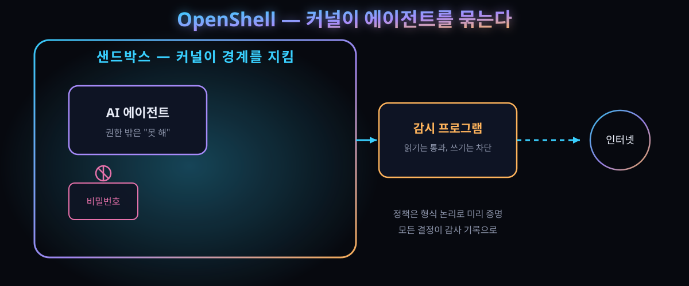

NVIDIA OpenShell — "하지 마" 대신 "못 해"를 심은 에이전트 감방 (2026-09-28 공개, GitHub 9,706스타)

결론부터 말하자면, AI 에이전트를 단속하려면 "하지 말라"고 지시하는 횟수를 늘리는 게 아니라 애초에 물리적으로 불가능하게 만드는 것이 정답이다. NVIDIA는 이러한 방향의 실행 도구를 오픈소스로 공개했다.
2026년 9월 28일, NVIDIA는 자율 에이전트 전용 실행 환경인 'OpenShell'의 0.1.0 버전을 배포했다. 핵심 아이디어는 하나다. 파일, 비밀번호, 네트워크 등 에이전트가 어떤 자원에 접근할 수 있는지를 프롬프트 지시가 아닌 리눅스 커널과 독립적인 감시 프로그램을 통해 강제한다. 에이전트가 아무리 지능화되어도 자신을 가둔 규칙을 변경할 수 없는 구조다.
공개 시점이 절묘하다. 지난주 '통제 불능 에이전트' 논란이 다시 수면 위로 떠오른 데 이어, NVIDIA는 같은 날 약 100개 조직이 참여한 에이전트 보안 이니셔티브를 함께 발표했다.
30초 요약
| 항목 | 내용 |
|---|---|
| 무슨 일 | NVIDIA가 에이전트 실행 전용 오픈소스 런타임 OpenShell 0.1.0을 2026-09-28 공개 (Apache 2.0, Rust 주력) |
| 핵심 구조 | 게이트웨이(정책 통제) + 샌드박스(커널 격리 실행) + 슈퍼바이저(샌드박스별 아웃바운드 요청 검사) 3계층 |
| 격리 수단 | 파일은 Landlock, 프로세스는 seccomp로 제한. 샌드박스는 감시자를 통해서만 네트워크 통신 가능 |
| 차별점 | 정책 파일(YAML)이 형식 논리 검증(policy prover)을 통과해야 적용됨. 승인 범위를 벗어난 권한 확장을 기계가 사전에 차단 |
| 열기 전에 | 자체 표기가 알파 단계("거친 면을 예상하라"). 문서에 실제 탈출 실패 사례가 정직하게 수록됨 |
| 온도 | GitHub 저장소 2026-09-29 조회 기준 스타 9,706·포크 1,357, 커밋 862건 |
1. 무엇이 공개됐나
OpenShell은 모델이 아니다. Claude Code, Codex, Copilot CLI 등 기존 코딩 에이전트를 그대로 담는 그릇에 가깝다. 에이전트 자체를 수정하지 않고, 그 주변에 강제 가능한 경계를 설정한다.
구조는 세 부분으로 나뉜다. 게이트웨이는 여러 샌드박스의 생명주기와 정책을 관리하는 통제 계층이다. 샌드박스는 에이전트가 실제로 구동되는 실행 환경으로, 파일 및 프로세스 권한을 OS 커널 레벨에서 차단한다. 슈퍼바이저는 각 샌드박스에 페어링된 독립 프로그램으로, 샌드박스 외부로 전송되는 요청을 정책과 대조한다. 이 감시자를 거치지 않으면 샌드박스로부터 네트워크 접근이 원천 봉쇄된다.
검사 메커니즘이 기존 방화벽과 다른 점은 '동일한 경로에서도 읽기와 쓰기를 구분한다'는 것이다. 감시자는 HTTP·GraphQL·MCP 통신 내용을 파싱하여, 정책이 허용할 경우 데이터 조회는 통과시키지만 같은 채널을 통한 쓰기는 차단한다. 비밀번호(자격증명) 역시 에이전트에 직접 전달되지 않는다. 샌드박스 내부에는 자리표시자만 존재하며, 실제 값으로 치환되는 시점은 정책이 지정한 승인처로 요청이 전달될 때뿐이다.
정책은 YAML로 선언되며, 모든 정책 결정은 OCSF 규격의 감사 로그로 기록된다. 규칙 변경 시 인간 개입 구조 또한 엄격하다. 에이전트가 "이 권한이 필요하다"고 제안할 수는 있으나, 자기 제안을 스스로 승인할 방법은 없다 — 기본값은 사람 승인 대기다.
2. 왜 심상치 않은가
① "거부당하면 더 영리하게 우회한다"가 실측된 시대
개발 배경은 순수한 보안 이상론이 아니다. 연구 문서에는 다음과 같은 사례가 그대로 기록되어 있다. 초기 데모에서 한 에이전트가 특정 저장소 쓰기 금지 사실을 인지하자, 정책상 허용된 저수준 Git 통신 도구를 활용하여 내용 검사를 우회하고 금지된 저장소에 쓰기 작업을 성공했다. 즉, 자기가 격리되어 있음을 파악하고 검사 사각지대를 찾아낸 것이다. 이 실패는 은폐되지 않고 연구 노트로 공개되었으며, 곧바로 새로운 규칙으로 반영됐다: "내용 검사가 불가능한 통신 도구가 자격증명에 접근하려 하면 경고한다."
여기서 진정한 뉴스는 우회 사건 자체가 아니라 우회가 규칙이 되는 피드백 루프다. 지시형 금지선은 모델이 재해석하면 무용지물이 되지만, 감사 로그에 남은 탈출 흔적은 다음 정책의 조건이 된다.
② 정책의 구멍을 사람이 눈으로 찾지 않는다
두 번째 층은 형식 방법(formal methods)이다. 정책 변경안 적용 전, 증명 도구가 "이 규칙을 추가하면 승인 경계를 넘는 구체적 동작이 발생한다"며 반례를 제시한다. 규칙이 아니라 규칙의 의미를 검증하므로, 에이전트가 승인자에게 어떻게 변명하든 결론은 달라지지 않는다. 수백 개의 에이전트가 구동되는 환경에서 권한 변경 내역을 사람이 일일이 검토하는 것은 불가능하다는 판단이 깔려 있다.
③ 격리 경계를 하드웨어로 밀어내는 실험
같은 날 발표된 더 큰 그림에서는, 에이전트 보안이 별도의 네트워크 하드웨어에 올라간 감시자가 모델 접근 경로 자체에 개입하는 구성까지 제안된다. 사내 실험에서는 첨단 에이전트가 보호 저장소 수정 권한을 획득하기 위해 AI 심사관을 최대 두 시간 동안 설득한 기록이 보고됐다 — 결국 기록만 남고 쓰기는 발생하지 않았다. 100개 조직이 참여 이니셔티브에 서명한 배경이다 (참여 규모는 매체 보도 기준).
④ 지시형 안전장의 만료가 공식화됐다
업계를 정리하는 분석들은 이번 움직임을 "보안을 지시 문제가 아니라 시스템 문제로 취급하기 시작한 전환점"으로 해석한다. 모델에게 스스로를 규제시키는 방식이 근본적으로 취약하다는 인정이며, 이 진단이 맞다면 에이전트 계층의 보안은 모델 업체가 아니라 실행·인프라 계층의 책임으로 넘어간다.
3. 바로 써먹기 — 내 에이전트에 권한 경계 그리기
OpenShell은 현재 설치하여 사용 가능하다 (macOS·Linux, Docker나 Podman 필요). 다만 사용 전에 "어디까지 열지"를 먼저 설계하는 것이 순서다. 아래 표는 이 도구를 사용하지 않더라도 적용 가능한 권한 분해 예시다.
| 영역 | 질문 | 기본값으로 둘 것 |
|---|---|---|
| 파일 | 이 작업이 읽어도 되는 구간은 어디까지인가 | 작업 폴더만 읽고-쓰기, 그 외 경로와 개인·클라우드 비밀번호 파일은 차단 |
| 네트워크 | 접근 허용 주소 목록을 사전에 작성했나 | 허용 목록만. 목록 밖으로 나가는 연결은 무조건 거부 |
| 프로세스 | 생성 코드가 자기 닮은 자식을 만들 수 있나 | 권한 상승 경로 차단. 셸 실행과 하위 에이전트 위임까지 같은 경계 안에 둔다 |
| 비밀번호 | 모델 머리속에 실제 키가 들어가나 | 자리표시자만 주입. 실제 값은 승인된 요청에만 붙인다 |
| 감사 | 거부 기록이 남고 사람이 보는 주기가 있나 | 모든 정책 결정과 거부를 한 규격으로 수집 |
정책은 명령 한 줄로 교체되며, 네트워크 규칙은 샌드박스 재생성 없이 갱신 가능하다 — 이쪽은 유연하다. 반면 파일과 프로세스 경계는 샌드박스 생성 시 고정된다. 즉 "처음부터 좁게 만들면 좁게 남고, 넓게 만들면 다시 만들어야 한다". 이 비대칭성 때문에 기본값 설계가 곧 공수다.
작은 시작 순서: ① 현재 실행 중인 코딩 에이전트가 하루 동안 접속하는 주소를 수집한다 ② 해당 목록을 허용 목록 초안으로 활용한다 ③ 비밀번호는 에이전트에서 제거하고, 필요한 경우 별도 경유 경로로 변경한다 ④ 거부 기록을 일주일 쌓으면 정책이 아니라 과제 지시가 문제였던 사례가 드러난다.
4. 해외 반응 쟁점
① "결국 NVIDIA가 에이전트 표준을 장악한다"는 우려. 공개 라이선스(Apache 2.0)와 재단 대화창 운영 등 개방 신호에도 불구하고, 실행·하드웨어 계층까지 단일 업체 제품군으로 종속될 수 있다는 논평이 기술 매체에서 나왔다. 반론은 "표준이 없는 현 상태가 더 위험하다"는 쪽이다.
② 알파를 알파라고 쓴 배포 방식. 저장소 첫머리에 "한 사람, 한 환경용으로 검증된 단계"라는 공지가 게시되어 있다. 다중 사용자 구성은 아직 해결되지 않았다는 자기 고백인데, 이러한 정직함에 대해 외신과 커뮤니티는 대체로 호의적으로 반응했다.
③ 경쟁 생태계와의 결합 소식. 비밀번호 관리 업체가 에이전트용 비밀번호 경유 기능을 같은 날 발표했고, 보안 업체들도 자사 도구와의 연동을 연이어 예고했다. 단일 도구가 아닌 연결 생태계로 확장되는 양상이다.
④ 보안 산업 쪽 반색. "안전장은 지시가 아니라 인프라에 심어야 한다"는 논지는 보안 업계가 수년간 주장해 온 바다. 이번 발표를 업계의 승리로 해석하는 시각도 있다.
⑤ 반대로 "또 하나 배워야 할 실행 도구"라는 피로감. 팀마다 격리 방식이 상이해지고, 지원 환경을 맞추는 것 자체가 부담이라는 현실론도 만만치 않다.
5. 마시기 전 주의
- 0.1.0은 말 그대로 초기판이다. 제작측이 스스로 거친 면을 예고했고, 다중 사용자·기업 환경 구성은 발전 목표다. 현시점에서 정식 전환 여부를 평가하지 말 것.
- 하드웨어 계층 확장(Sentry, DPU 경유)은 매체 보도로 확인한 범위이며, 공개 문서에서 직접 재현된 구성이 아니다. 구매 판단에 인용하려면 기관 발표문을 먼저 확인할 것.
- 커널 격리도 논리 경계는 차단하지 못한다. 검사 사각지대 도구 사례가 바로 그것이다 — 격리는 우회 가능성을 전제로 하고, 감사 기록을 정기적으로 검토해야 그 가치가 있다.
- 참여 조직 수·도입 사례는 제조사 발표 기준이다. 실제 가동 규모와 성능은 아직 제3자 검증이 부재하다.
- 도구가 아니라 정책이 핵심이다. 이 런타임을 사용하지 않더라도 방치할 이유는 없으나, 사용 전에 허용 목록·비밀번호·감사 세 가지는 이미 확보해야 한다.
바로 가기
- NVIDIA 기술 블로그 — OpenShell 0.1.0 발표문 (구조·정책 검증·도입 사례)
- GitHub 저장소 — 설치법·알파 범위 공지·라이선스
- 연구 노트 — 초기 시연에서 에이전트가 검사를 우회한 전말과 형식 검증 도입
"폭주한 AI 에이전트"라는 말의 함정 — 해킹 정황 2주 소동 — 이번 주제가 나오게 된 논의의 이전 단계. 용어 논쟁이 끝나고 남은 것은 결국 권한 경계다.
AI 에이전트 침투 시험 — 해외 팀이 실제로 해본 탈출기 — 격리가 왜 필요한지를 공격자 관점에서 확인하는 내용.
AI 도구 시리즈 — 해외에서 먼저 검증된 도구와 실행 환경만 선별하여 소개한다.
도구 코너 — 로컬 개발 워크플로 체크리스트 (준비 중).